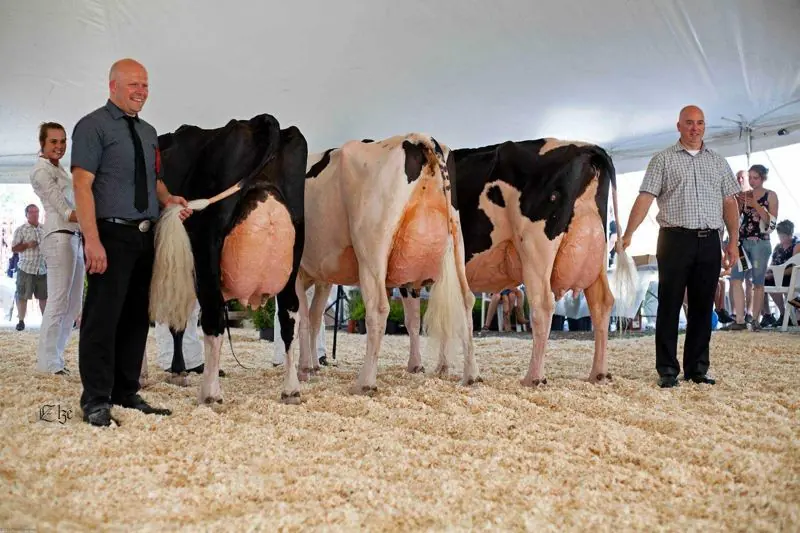

KiosquesJugements
Réservez votre kiosque
Producteurs, concessionnaires, commerçants et artisans : en 2026, les kiosques étaient ouverts du jeudi au dimanche, au cœur de l'Expo.

Pourquoi
exposer?
Devant les producteurs, les familles et les acheteurs de la région.
- Éleveurs
- Les jugements Holstein favorisent les échanges entre producteurs et font connaître le travail des éleveurs d'ici au grand public.
- Concessionnaires et fournisseurs
- Contact direct avec les producteurs, sur le terrain, avec votre machinerie et vos nouveautés.
- Commerçants de la région
- Une nouvelle clientèle et la chance de montrer vos produits et services locaux.
- Producteurs agroalimentaires
- Dégustation et vente, regroupés en petit marché public dans le palais des commerces.
Votre
emplacement
Prix et disponibilités sur demande : remplissez le formulaire et on vous envoie les tarifs 2027.
- Kiosque extérieur
- Sur le terrain de l'Expo, pour la machinerie, les concessionnaires et les fournisseurs.
- Kiosque intérieur
- Dans le palais des commerces, à l'abri.
- Agroalimentaire
- Dans le palais des commerces, avec dégustation et vente.
- Restauration
- Le volet restauration des kiosques agroalimentaires, coordonné par Mathieu Privé.
- Artisanat
- Une place réservée aux artisans de la région.
- Exposant agricole
- Jugement des bovins Holstein et jugement des jeunes éleveurs, à la tente de jugement.



Les
documents
Chaque document indique son année.
- Formulaire de réservation de kiosqueÉdition 2027À venir
- Invitation kiosques extérieursÉdition 2027À venir
- Invitation kiosques intérieursÉdition 2027À venir
- Invitation kiosques agroalimentairesÉdition 2027À venir
- Invitation artisanatÉdition 2027À venir
- Plan du site et des kiosquesÉdition 2027À venir
- Normes des bovins laitiersVersion 2018, la plus récente publiéePDF 2018 : normes des bovins laitiers
- Règlements généraux, bovinsVersion 2018, la plus récente publiéePDF 2018 : règlements généraux, bovins
Réserver
un emplacement
Dites-nous ce que vous cherchez. Marjolaine Boutin, coordonnatrice, communique avec vous pour vous donner les disponibilités et les prix. Vous pouvez aussi l'appeler au 418 386-0484 (cellulaire) ou au 418 882-5649 (bureau).
Merci, c'est reçu!
On communique avec vous pour les disponibilités et les prix. Si c'est pressant : 418 386-0484.